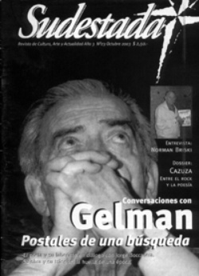

Buscar
Palimpsesto de la risa
Los hermanos Marx y una disparatada crónica de una vida fílmica nada convencional. La frontera entre la risa y la carcajada en un mundo cada vez más turbio, como el de Hollywood. "Estos son mis principios. Si no le gustan tengo otros." (G. Marx)
Edición N° 23
Octubre 2003
Revista bimensual
Comprar edición impresaSumario
- Conversaciones con el poeta Juan Gelman: "Valer la pena es estar a la altura de la pena"
- Buenos vientos
- Entrevista con Norman Briski: "El teatro es la herramienta más propicia para estas crisis"
- Cazuza: "Mientras haya burguesía no habrá poesía"
- Palimpsesto de la risa
Compartir Articulo
En una escena de Sopa de ganso, Firefly (Groucho) persigue a un impostor que ha entrado en la mansión en busca de los planos para la guerra. Pinky (Harpo) se ha disfrazado de Firefly y le hace creer a este que esta frente a un espejo. Firefly desconfía de su doble, aunque este reconstruye, representa minuciosamente cada gesto originario del otro. En un momento se acercan cara a cara, comienzan a girar sobre un eje hasta traspasar el límite imaginario que marcaría un punto de inflexión entre represetación-representado. El espejo se ha roto. O mejor dicho: en todo el filme (en toda la filmografía de los Hermanos Marx) no hay un antes y un después del espejo, sino que es puro espejo, puro límite en el que las jerarquías están invertidas, en donde la carcajada se fuga y disemina cada situación. Verifiquemos una cita literaria:
"Alicia y el Gusano de seda estuvieron mirándose durante un rato sin pronunciar palabra. Finalmente el Gusano se sacó la pipa de la boca y le preguntó a la niña, con voz perezosa y soñolienta:
-¿Quién eres tú?
[...] -Casi...lo ignoro ya, señor. Podría decirse quién era hasta esta mañana, pero sospecho que debo de haber cambiado varias veces.
-¿Qué estás diciendo?- exclamó el Gusano al no entenderla-. Explícate mejor.
-Me es imposible explicarme mejor, señor ¿No comprende usted que yo... ya no soy yo?"
Alicia en el país de las maravillas, Lewis Carroll
* * *
"Nunca pertenecería a un club que consintiese tener a alguien como yo de socio" (G. Marx)
* * *
Las películas de los Marx consisten básicamente en eso: la disolución de un yo en una pluralidad indisociable. Si bien prevalecen ciertos rasgos particulares que permiten caracterizarlos, los tres crean una homogeneidad:
"Tomando el conjunto indisoluble de los tres, Harpo es el uno, el representante de los afectos celestiales, pero también de las pulsaciones infernales, voracidad, sexualidad, destrucción. Chico es el dos, el que se hace cargo de la acción, de la iniciativa, del duelo con el medio, de la estrategia, del esfuerzo y la resistencia. Groucho, por último, es el tres, el hombre de las interpretaciones, los actos simbólicos y las relaciones abstractas. Sin embargo, cada uno de los tres pertenece a la terceridad que juntos componen".
Gilles Deleuze
* * *
Sopa de ganso supone, entonces, una visión fragmentada, frágil, que intenta abrirse paso como una voz política bajo cierta lógica de la inversión. Dentro de la tradición cómica (Chaplin y Keaton), los Marx construyen una verborragia fílmica, en donde se extingue la causa y el efecto del chiste: las películas de los Marx son pura risa, son un mundo aparte aunque, en términos de Walter Benjamin, inscripto dentro de los modos de producción, como una voz política "subversiva". La risa es el espanto de la política: Si se escribiese la verdad acerca de la mayor parte de los hombres públicos, no habría cárceles suficientes para albergarlos (Groucho Marx).
* * *
"Inteligencia militar son términos contradictorios" (G. Marx)
* * *
Esa inversión de cierta tradición y esa diseminación, se expande en el tiempo hasta los filmes de Woody Allen (¡¿Qué hubiera sido de Allen sin esa lógica simbolista y las premisas de argumentación que construyen el discurso cómico de los Marx?! ¡¿Y cuánto habría dado Allen para poder psicoanalizar a Groucho?!), hasta algunos filmes del humor inglés sello MontyFicton. El bigote, la mudez, el tinte italianizado se expande en la Historia creando su propia tradición delirante de situaciones, sketchs y guiones.
* * *
"La política es el arte de buscar problemas, encontrarlos, hacer un diagnóstico falso y aplicar después los remedios equivocados." (G. Marx)
"- ¿Pagar la cuenta?... ¡Qué costumbre tan absurda!"
* * *
El valor simbólico del dinero está desvirtuado, sin embargo ese nuevo valor absurdo es el que maneja las relaciones, posibilita, crea el punto de fuga para la construcción, para la "sobre producción" de los planos. Sí, es cierto: hay cierto barroquismo en las películas de los Marx, cierto barroquismo que remite a un modo de reproducción fílmico originario (el RPI), pero de eso justamente se trata; de un volver al origen, reírse de la circulación, del negocio del cine, y reinscribirse en una tradición cinematográfica nueva.
* * *
"Desde el momento en que cogí su libro me caí al suelo rodando de risa. Algún día espero leerlo." (G. Marx)
(La nota completa en la edición gráfica de Sudestada N°23)
Comentarios
Fernando Krapp
Articulos más vistos


LIBRERÍA SUDESTADA

Colección infantil

Distribuidora de Libros

Suscripción

Sudestada en URUGUAY

Otros articulos de esta edición
 Dossier
Dossier
Cazuza: "Mientras haya burguesía no habrá poesía"
Libertad, dolor, sexo y pasión son parte del repertorio de Cazuza, el músico brasileño que le bastó menos de una ...
 Entrevista
Entrevista
Entrevista con Norman Briski: "El teatro es la herramienta más propicia para estas crisis"
Actor y director, referente del teatro argentino, Norman Briski representa la contínua búsqueda de nuevos espacios de expresión. Una vida ...
 Nota de tapa
Nota de tapa
Conversaciones con el poeta Juan Gelman: "Valer la pena es estar a la altura de la pena"
Poeta, periodista, militante incansable por la verdad y la memoria; Juan Gelman y una conversación donde se entrecruzan su último ...
 Editorial
Editorial